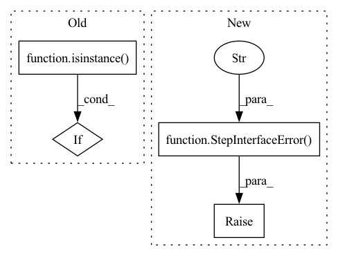

Pattern ID :38579
Before Change
cls.INPUT_SPEC.update({arg: arg_type.type})
elif isinstance(arg_type, Output):
cls.OUTPUT_SPEC.update({arg: arg_type.type})
elif isinstance( arg_type, Param) :
cls.PARAM_SPEC.update({arg: arg_type.type})
else:
cls.PARAM_SPEC.update({arg: arg_type})After Change
process_defaults = process_spec.defaults
if process_defaults is not None:
raise StepInterfaceError(
"The usage of default values for "
"parameters is not fully implemented yet."
"Please do not use default values in "
"your step definition."
)
// for i, default in enumerate(process_defaults):
// // TODO: [HIGH] fix the implementation
// process_args.reverse()
// arg = process_args[i]In pattern: SUPERPATTERN
Frequency: 3
Non-data size: 4
Instances Fragment ID: 110384148
Project Name: maiot-io/zenml
Commit Name: cfaf64a733041271d1b3710307c0ea561f190f70
Time: 2021-09-30
Author: bariscandurak@hotmail.com
File Name: src/zenml/steps/base_step.py
M Class Name: BaseStepMeta
N Class Name: BaseStepMeta
M Method Name: __new__(4)
N Method Name: __new__(4)
M Parent Class: type
N Parent Class: type
M File Name: src/zenml/steps/base_step.py
N File Name: src/zenml/steps/base_step.py
M Start Line: 17
M End Line: 59
N Start Line: 19
N End Line: 61
Before Change
if self.CONFIG:
// Find the config
for v in kwargs.values():
if isinstance( v, BaseStepConfig) :
config = v
try:After Change
maximum_kwarg_count = 1 if self.CONFIG else 0
if len(kwargs) > maximum_kwarg_count:
raise StepInterfaceError(
f"Too many keyword arguments ({len(kwargs)}, "
f"expected: {maximum_kwarg_count}) passed when "
f"creating a "{self.step_name}" step."
)
if self.CONFIG and len(kwargs) == 1:
config = kwargs.popitem()[1]
Fragment ID: 110384150
Project Name: maiot-io/zenml
Commit Name: 487e6731441e4bf29df9a8e9c3bcbaaedbfd07eb
Time: 2021-10-18
Author: michael.schuster.ffb@googlemail.com
File Name: src/zenml/steps/base_step.py
M Class Name: BaseStep
N Class Name: BaseStep
M Method Name: __init__(1)
N Method Name: __init__(1)
M Parent Class:
N Parent Class:
M File Name: src/zenml/steps/base_step.py
N File Name: src/zenml/steps/base_step.py
M Start Line: 138
M End Line: 161
N Start Line: 140
N End Line: 170
Before Change
// Parse the input signature of the function
for arg in process_args:
arg_type = process_spec.annotations.get(arg, None)
if isinstance( arg_type, Input) :
if issubclass(arg_type.type, BaseArtifact):
cls.INPUT_SPEC.update({arg: arg_type.type})
else:After Change
elif default_materializer_factory.is_registered(arg_type):
cls.INPUT_SPEC.update({arg: BaseArtifact})
else:
raise StepInterfaceError(
f"In a ZenML step, you can only pass in a "
f"`BaseStepConfig` or an arg type with a default "
f"materializer. You passed in {arg_type}, which does not "
f"have a default materializer."
)
// Infer the returned values
return_spec = process_spec.annotations.get("return", None)
if return_spec is not None: Fragment ID: 110384153
Project Name: maiot-io/zenml
Commit Name: 2bc37d3ae38e2d423b022939295153ebb535f96c
Time: 2021-10-12
Author: htahir111@gmail.com
File Name: src/zenml/steps/base_step.py
M Class Name: BaseStepMeta
N Class Name: BaseStepMeta
M Method Name: __new__(4)
N Method Name: __new__(4)
M Parent Class: type
N Parent Class: type
M File Name: src/zenml/steps/base_step.py
N File Name: src/zenml/steps/base_step.py
M Start Line: 23
M End Line: 52
N Start Line: 33
N End Line: 66